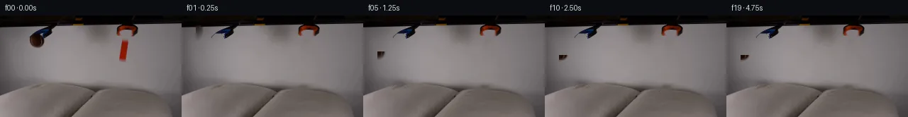

![首帧]()

Round 00
2026-11-04T19:25:38.485002+00:00像素候选变化代码 +345/−0inspection 更新
pixels 41dc121c7b314b5f · code 42213b0f120588e6
查看本轮 generate.py 真实 diff
--- previous/generate.py
+++ current/generate.py
@@ -0,0 +1,345 @@
+"""
+PixelWorld vision-input generator for case_0003_attempt_01.
+
+Local Python pixel operations only (numpy/PIL/scipy): a smooth analytic wall
+model is fitted to first_frame.png, the brown tennis ball is extracted as an
+RGBA sprite, the orange block sprite is built from measured streak colours,
+and both objects follow a simple gravity / restitution simulation. Each
+output frame integrates 32 sub-frame samples (0.25 s exposure) so motion blur
+matches the frame-0 streak. Frame 00 is copied byte-for-byte from
+first_frame.png.
+"""
+from pathlib import Path
+import numpy as np
+from PIL import Image
+from scipy.ndimage import gaussian_filter, distance_transform_edt, binary_dilation
+
+import artifact_io
+
+HERE = Path(__file__).parent
+W, H = 256, 144
+DT = 0.25
+N_SUB = 32
+
+rng = np.random.default_rng(20261105)
+
+# ---------------------------------------------------------------- geometry
+first = np.asarray(Image.open(HERE / "first_frame.png").convert("RGB"))
+assert first.shape == (H, W, 3)
+orig = first.astype(np.float64)
+R, G, B = orig[..., 0], orig[..., 1], orig[..., 2]
+yy, xx = np.mgrid[0:H, 0:W]
+
+# ---- smooth wall model: degree-3 polynomial + smooth residual + fine noise
+neutral = (np.abs(R - G) < 16) & (np.abs(G - B) < 18) & (R > 78)
+rows = (yy >= 12) & (yy <= 96)
+exclude = np.zeros((H, W), bool)
+exclude[14:37, 30:79] = True # left arm + claw
+exclude[12:70, 158:196] = True # right U + streak
+exclude[((xx - 52) ** 2 + (yy - 36) ** 2) < 14 ** 2] = True
+wallmask = neutral & rows & ~exclude
+
+xn = (xx - 128) / 128.0
+yn = (yy - 55) / 80.0
+
+def design(x, y, deg=3):
+ cols = []
+ for a in range(deg + 1):
+ for b in range(deg + 1 - a):
+ cols.append((x ** a) * (y ** b))
+ return np.stack(cols, -1)
+
+Xw = design(xn[wallmask], yn[wallmask])
+Xall = design(xn, yn)
+fit = np.zeros_like(orig)
+for c in range(3):
+ cf, *_ = np.linalg.lstsq(Xw, orig[..., c][wallmask], rcond=None)
+ fit[..., c] = Xall @ cf
+
+resid = orig - fit
+# nearest-neighbour fill of residual over holes, then smooth
+_, idx = distance_transform_edt(~wallmask, return_indices=True)
+resid_fill = resid[idx[0], idx[1]]
+smooth = np.empty_like(orig)
+for c in range(3):
+ smooth[..., c] = gaussian_filter(resid_fill[..., c], 5.0)
+fine_sigma = float((resid[wallmask] - smooth[wallmask]).std())
+noise = gaussian_filter(rng.normal(0, 1, (H, W)), 0.6)[..., None]
+wall_plate = fit + smooth + noise * fine_sigma * 0.8
+
+# ---------------------------------------------------------------- masks
+def claw_pixels(r=R, g=G, b=B):
+ """Neutral black mechanism or blue jaw (distinguishes claw from ball)."""
+ neutral_dark = (r < 70) & (np.abs(r - g) < 8) & (np.abs(r - b) < 10)
+ blue = (b - g > 12) | (b - r > 12)
+ return neutral_dark | blue
+
+dist_to_fit = np.linalg.norm(orig - fit, axis=-1)
+rad = np.sqrt((xx - 52) ** 2 + (yy - 36) ** 2)
+reddish = ((R - G) > 6) | ((R - B) > 9)
+ball_core = (rad < 10.6) & ~claw_pixels() & (reddish | (R < 95)) & (dist_to_fit > 5)
+ball_hole = binary_dilation(ball_core, iterations=1) & (rad < 11.4) & ~claw_pixels()
+
+streak_sat = (((R - G) > 14) | ((R - B) > 14)) & (dist_to_fit > 9)
+streak_hole = np.zeros((H, W), bool)
+streak_hole[30:69, 163:192] = streak_sat[30:69, 163:192]
+streak_hole = binary_dilation(streak_hole, iterations=1)
+
… diff truncated; 258 more lines …